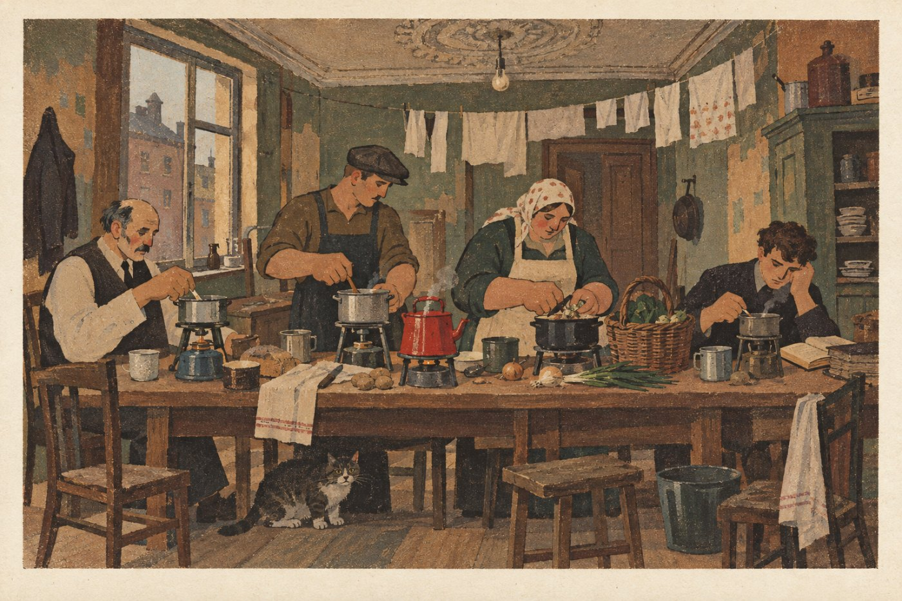

§2. Шумная республика (1920-е)

Первые годы мира были голодными. Засуха 1921 года погубила урожай в Поволжье, и спасать людей помогали американские благотворители. Но деревня получила землю и быстро встала на ноги. Крестьяне объединялись в кооперативы, то есть в товарищества, которые вместе покупали машины и вместе продавали зерно и масло. К концу десятилетия кооперативы держали свои банки, заводы и газеты.
В городах жилось теснее. С фронта и из разорённых губерний туда приехали миллионы людей, а домов не хватало. В 1921 году приняли квартирный закон: хозяин большой квартиры обязан был сдавать лишние комнаты по твёрдой цене. Так появились «общие квартиры», где на одной кухне встречались бывший чиновник, рабочий и торговка с рынка.
Политика стала делом шумным и для многих непривычным. За десять лет в республике сменилось четырнадцать правительств. Главными партиями были эсеры, за которых голосовала деревня, и кадеты, партия образованных горожан. Выбирали всё: Государственную думу, городских гласных, мировых судей, домовые комитеты. В 1923 году ввели новый твёрдый рубль, и старые обесцененные деньги, «керенки», пошли на оклейку стен.
Жить без окраин оказалось труднее, чем думали в 1919 году. Уголь для заводов и паровозов покупали у Украины, нефть у Азербайджана и у англичан в Грозном, а платили за них хлебом. Своей нефти было немного, на Кубани возле Майкопа. Свой хороший уголь лежал далеко, в Сибири, и возить его было дороже, чем покупать донецкий. Морская торговля шла через Петроград, где гавань зимой замерзает, и через Новороссийск. В неурожайный год заводы неделями стояли без топлива. Дорого обходился и Терский край: там каждое лето спорили из-за земли, и республика держала на Тереке войска, на которые у неё не хватало денег.
У соседей было неспокойно. Украина в 1919 году воевала с Польшей за Галицию, а по её городам и местечкам прокатились еврейские погромы. Одесса по договору 1920 года получила права вольной гавани: товары ввозили туда без пошлины. Город разбогател на торговле и на контрабанде, и власть в нём делили купцы, портовые артели и налётчики.
Запомните даты. 1921 год: голод в Поволжье и квартирный закон. 1923 год: твёрдый рубль.
Вопрос. Почему современники называли республику двадцатых годов «шумной»? Хорошо это или плохо, когда правительства меняются каждый год?